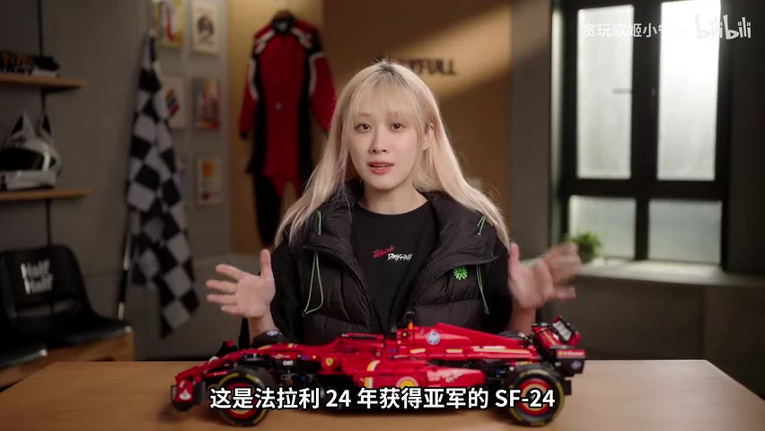
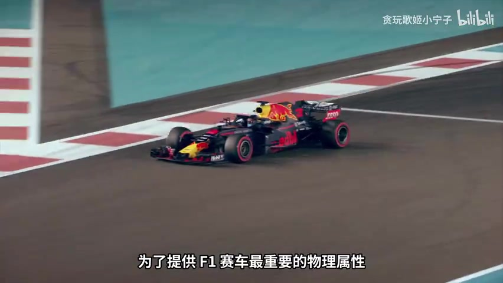
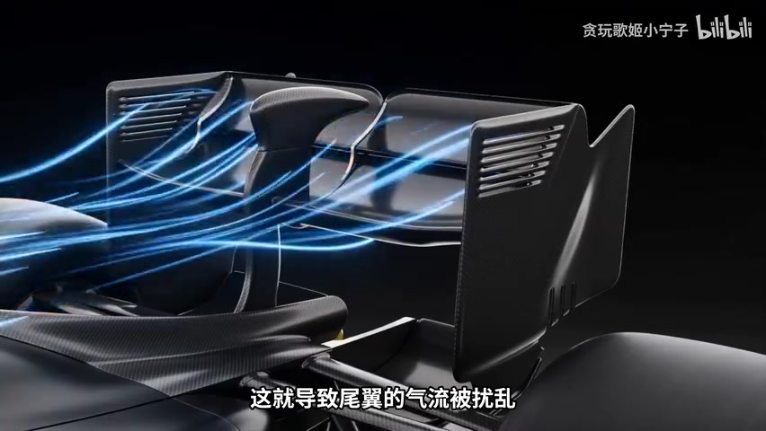
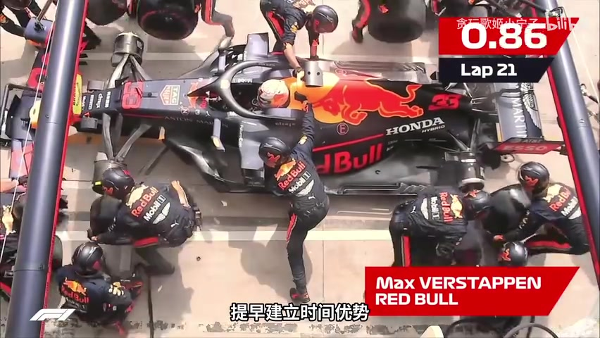
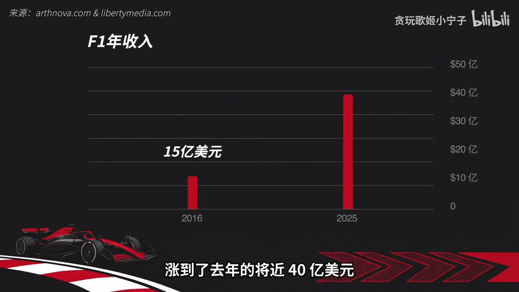
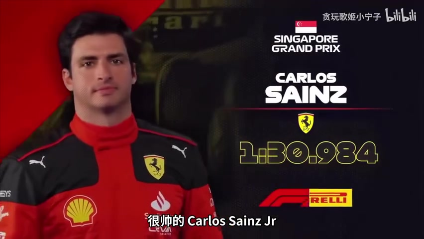
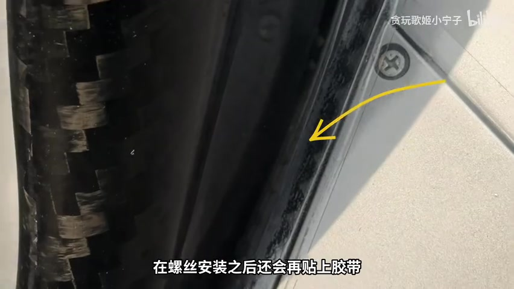

00:00—00:43 · 开场
二十多辆车绕圈，为什么能吸引几亿人？
视频从中国大奖赛的热闹开场。UP 主称，现场观众达到 23 万人次，F1 的年度规模甚至超过 NBA。她却仍然好奇：大家涌进赛场，难道只是为了看一群“有钱又帅”的男人绕圈开快车？
于是她查资料、看纪录片，又受一汽奥迪邀请来到上海站。镜头从桌前讲解切到赛场，问题也被拆成四个简单的字：车、赛、钱、人。
“F1 到底在看什么？我们分车、赛、钱和人四个部分来讲。”00:37—00:43，按语境校正术语
人数、赛事规模等数据均来自视频口述。这里记录的是 UP 主如何提出问题，不把这些数字扩写成独立核验后的结论。
00:43—02:52 · 车
零百不是重点，真正夸张的是高速过弯
桌上出现一辆红色 SF-24 模型。视频用一组直观参数建立尺度：一辆典型 F1 赛车造价约 1700 万美元，1.6 升 V6 混动动力、约 1000 马力、车重约 800 千克。零到一百公里约 2.4 秒，看起来未必胜过某些超跑或电车；但一百到两百公里只要约 1.8 秒，并能长期保持三百公里以上的速度。

但视频真正想强调的是弯道。那些复杂翼片和车身线条都在服务同一个物理属性：下压力。UP 主把赛车比作倒置机翼——飞机用气压差向上飞，F1 的前翼、车底和尾翼则把车牢牢压向地面，让轮胎在高速弯仍有抓地力。

“轮子上的飞机。”01:37—01:39，视频引用的比喻
视频又给出两个夸张例子：时速超过 240 公里时，下压力可能超过车重，理论上足以让赛车倒着开在足够长的隧道天花板上；2023 年拉斯维加斯大奖赛的法拉利赛车还遭遇了松动井盖事故。后一个片段的 Whisper 误识别较重，因此这里只保留事故与底部气流吸力之间的叙述，不补写听不清的细节。
02:52—05:30 · 工程
每队造自己的车，规则缝隙里也藏着比赛
F1 并不是大家开同一款赛车。各队在共同规则下开发各自的底盘和空气动力方案，所以赛事同时颁发车手冠军与车队冠军：既比驾驶，也比研发。每逢新规，工程师便在限制内寻找性能空间。
视频用迈凯伦 F-duct 讲了一个经典故事。弯道需要下压力，直线却希望降低阻力；规则又不允许直接移动翼片。迈凯伦在驾驶舱前设置气流入口，车手用腿遮住入口后，气流改道并扰乱尾翼，降低阻力。空气动力组件本身没有移动，结构因此一度被判合法，并引来其他车队仿制。

“上有政策，下有对策。”04:00—04:02，UP 主对规则博弈的概括
下一年，规则允许可动空气动力组件，DRS 阻力削减系统登场。UP 主把这种“规则变化—寻找漏洞—吸收方案”的循环比作进化：F1 的科技演进，不只是造更快的车，也是工程师和规则持续斗智斗勇。
05:30—08:46 · 赛
三百公里时速下，车手在玩即时策略
UP 主先推翻了自己的旧印象：赛车并不是一直往前冲，最快的人和车也不会自动一直赢。赛事规则像持续更新的游戏补丁，不只平衡竞争，也要制造可观看的超车与悬念。视频从 DRS 讲到 2026 超车模式，把电能回收和高功率释放形容成“回蓝”和加速道具。
“F1 的本质就写在名字里：一级方程式赛车。用方程制造限制，再看谁在限制里玩得最聪明。”06:59—07:07，按语境校正 Whisper 术语
轮胎把这种取舍变得具体。它不是一味追求又快又耐用，而是会衰减的比赛资源。车手进攻会耗胎，超车成功也可能换来更早进站。比对手先换新胎、用圈速建立时间优势叫 Undercut；延后进站、继续用旧胎争取赛道位置则叫 Overcut。

资源平衡还延伸到车队研发。视频介绍了 2021 年起的预算帽，以及空气动力学测试时间反向分配：上赛季成绩靠后的车队能得到更多测试资源。UP 主把它们比作统一金币上限和追赶机制，最后把 F1 归纳成车队、车手与数百名工程师共同参与的策略游戏。
08:48—12:11 · 钱
从烧钱项目，变成面向全球年轻人的内容产品
商业章节的转折点是 2017 年。视频称，Liberty Media 以约 80 亿美元取得 F1 商业运营权，随后放开社交媒体、推动 Netflix 拍摄《Drive to Survive》，并加强美国市场布局。UP 主把变化形容为：F1 从“欧洲有钱老头的私人俱乐部”，变成全球年轻人的内容产品。

收入不只来自转播权与赞助。视频还讲到城市支付的举办费、高价现场款待，以及赛事收入按公式分给车队。赛事分成、车队赞助和预算帽共同作用，视频据此判断当前车队大多能盈利。这里的收购价、收入、举办费和票价均是视频所述，年份与口径并未在片中完整展开。
品牌参赛也不只是为了分成。法拉利把赛事与品牌核心绑定；红牛通过 F1 塑造极限运动生活方式；凯迪拉克、奥迪等厂商还希望把混动、空气动力、碳纤维制造和数据分析能力带回量产车。UP 主称 Liberty 的收购可能是体育史上极划算的一笔，这是她的评价，不是投资结论。
12:11—13:38 · 人
技术让人惊叹，人物故事让人追下去
汉密尔顿、勒克莱尔、塞恩斯、维斯塔潘依次登场。每支车队只有两位正式车手，他们使用相近的赛车，于是队友成了最直接也最残酷的参照：谁开得好，谁开得不好，很难全都归因于车。

对完全不了解 F1 的观众，UP 主推荐 Netflix 纪录片《Drive to Survive》。它不负责系统讲技术和战术，而是把车手的挣扎、成长、竞争与车队矛盾剪成易进入的故事。她给出的入门办法很简单：先选一个顺眼的车手或车队，跟着看几场。
“它是地球上科技含量最高的运动，是时速 300 公里的策略游戏……但说到底，它好看，是因为里面的人和他们发生的故事。”13:17—13:32，省略一处未核验的商业概括
13:38—15:48 · 现场后记
从屏幕走到上海站，速度变成胸腔里的震动
片尾前，叙述回到视频的起因：一汽奥迪的邀请。UP 主说，做了再多调研也替代不了现场。赛车从面前经过时，不只是用眼睛看到，而是能用胸腔感到冲击。她还进入奥迪 pit 车库，看到动力单元、工程师整备车辆，以及前翼安装后用胶带减少细微阻力的做法。

随后是一支车队的重启故事。视频介绍，奥迪接手拥有三十多年历史的 Sauber，组建厂队并自造动力单元；车手由经验丰富的尼科·霍肯伯格和新人加布里埃尔·博托莱托搭档。上海站换胎失误让 UP 主在车库上方看得揪心，但她根据现场参观仍认为团队专业、前景值得期待。
对奥迪团队“很有希望”的判断来自受邀现场体验，属于 UP 主个人立场。口播在 15:47.76 结束，视频余下约 24 秒没有 Whisper 分段，本文不补写对白。
“这就是 F1 入门需要知道的所有东西了，我们下期再见。”15:44—15:48